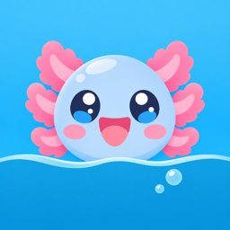

WaterPrivacy Policy
Water is made by 88SAGA Yapay Zeka ve Yazılım Teknolojileri Limited Şirketi ("88saga", "we"). This policy explains what the app keeps, where, who can see it, and how to delete it. Water has no ads, no analytics and no tracking, and we never sell data.
Without an account
You can use Water as a guest. Then everything stays on your iPhone: your water log, goal, settings, your buddy and its island, streaks and water points. Nothing is sent to us. Deleting the app deletes it.
The answers you give when you set up your goal (body weight, activity, climate, coffee) are used once on your iPhone to suggest a daily goal. They are not stored or sent anywhere; only the goal is kept.
With Sign in with Apple
Signing in is optional. It syncs your data between your devices and lets you add friends. We do not ask Apple for your name or email address. We receive and keep:
- an anonymous user identifier from Apple;
- your water log (amount and time of each drink);
- your settings: daily goal, units, drink size, waking hours, reminder level, your buddy's name, color and island, and the water points and items you earned;
- if you use friends: the nickname you choose, your invite code, your friendships and best buddy, the splashes you send and receive, and the users you block or report;
- if you allow notifications: a push token from Apple, so a friend's splash can reach your phone.
We use this data only to run the app: syncing, showing your friends, and delivering splashes. Our server sees your IP address when the app talks to it, as every server does; we use it only for rate limiting and do not store it.
What your friends see
Only people you add with your invite link become your friends. They see your nickname, your buddy (its color, form and island), today's water amount and goal, your streak, whether your buddy is thirsty, and how long you have been friends. They never see your water log, your settings or your Apple identifier. You can remove or block a friend at any time.
Reports and safety
Nicknames are checked against a list of offensive words. You can remove a friend, or block and report them with a reason; a blocked user cannot add you again. A report is emailed to our team, and we review it within 24 hours. We may remove a nickname or an account that breaks these rules: no offensive, hateful or harassing names, and no impersonating others or our staff.
Notifications, widgets and photos
Water reminders are planned on your iPhone. Splashes from friends are delivered by the Apple Push Notification service. Widgets read their data from your iPhone, not from the internet. A visit photo is made on your iPhone; it is saved or shared only when you choose to, through the iOS share sheet.
Who processes the data
Your synced data is stored on a server we rent and run ourselves. Traffic to it passes through Cloudflare for security. Apple provides Sign in with Apple and push notifications. These providers act on our behalf and protect the data at least as this policy does. No one else receives your data.
Keeping and deleting data
We keep your synced data while you have an account. To delete it, open Settings, then Account, then Delete account. This deletes your account and everything listed above from our server at once, removes you from your friends' lists, and revokes Water's access to your Apple ID. Signing out keeps your account so you can sign in again. If we keep backups, deleted data leaves them within 30 days. Data stored only on your iPhone goes away when you delete the app.
Children
Water is a general-audience app and is not directed at children under 13. It does not ask for anyone's age, name, email address or location.
Changes and contact
If this policy changes, the current version is published on this page. For questions, data requests or reports, write to 88sagacom@gmail.com.